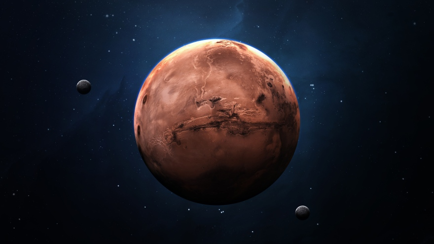
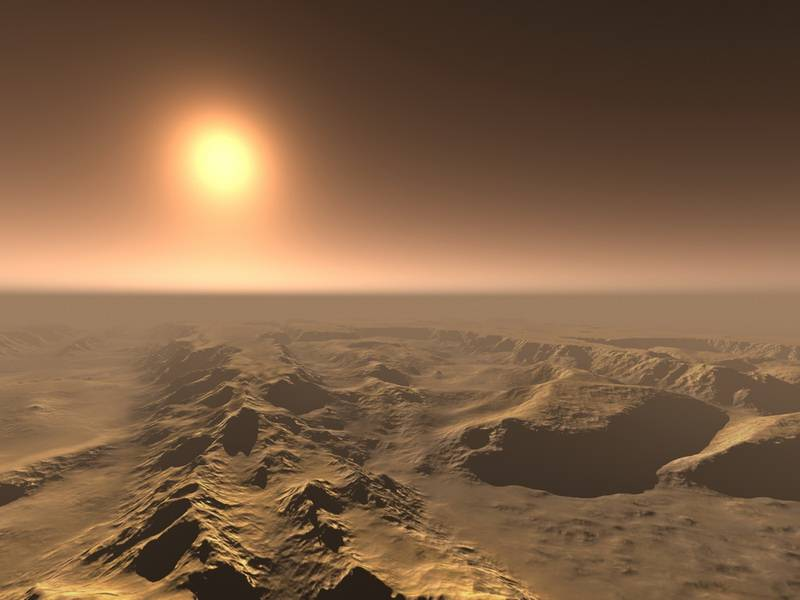
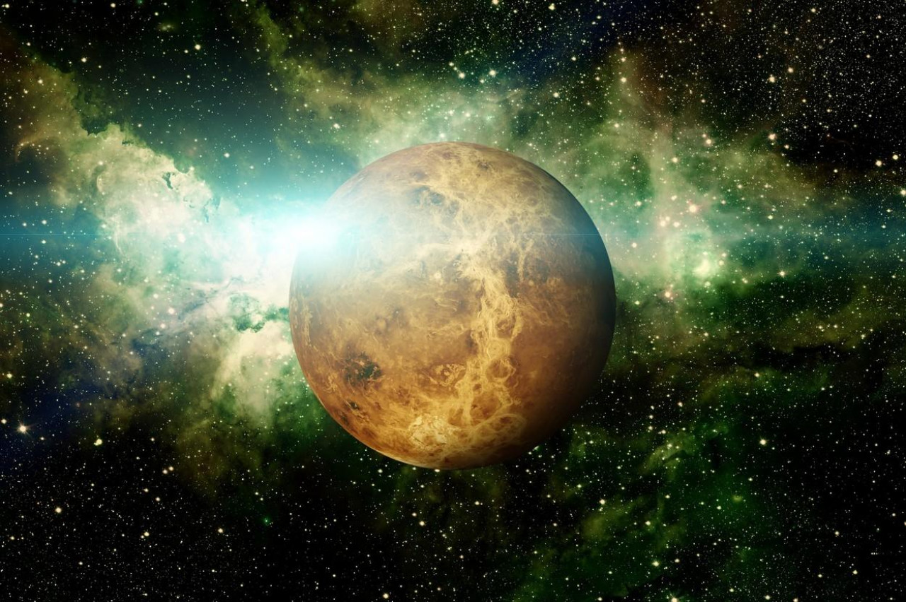
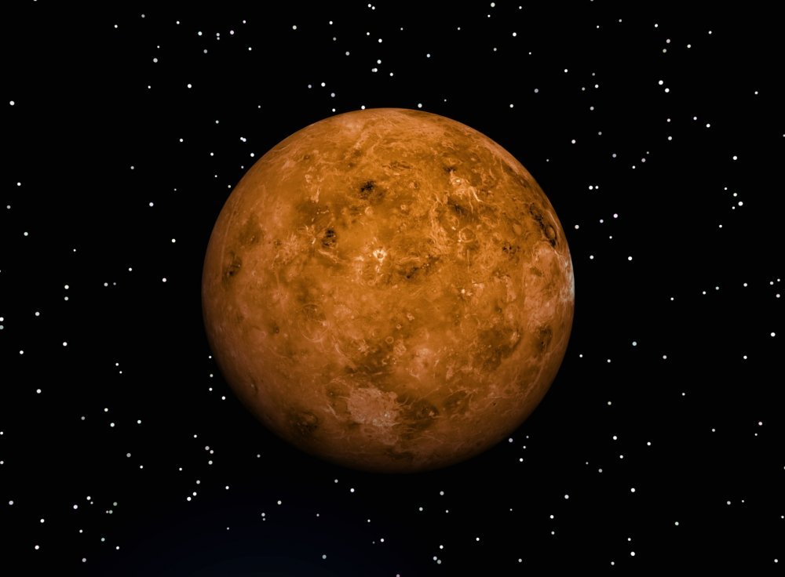
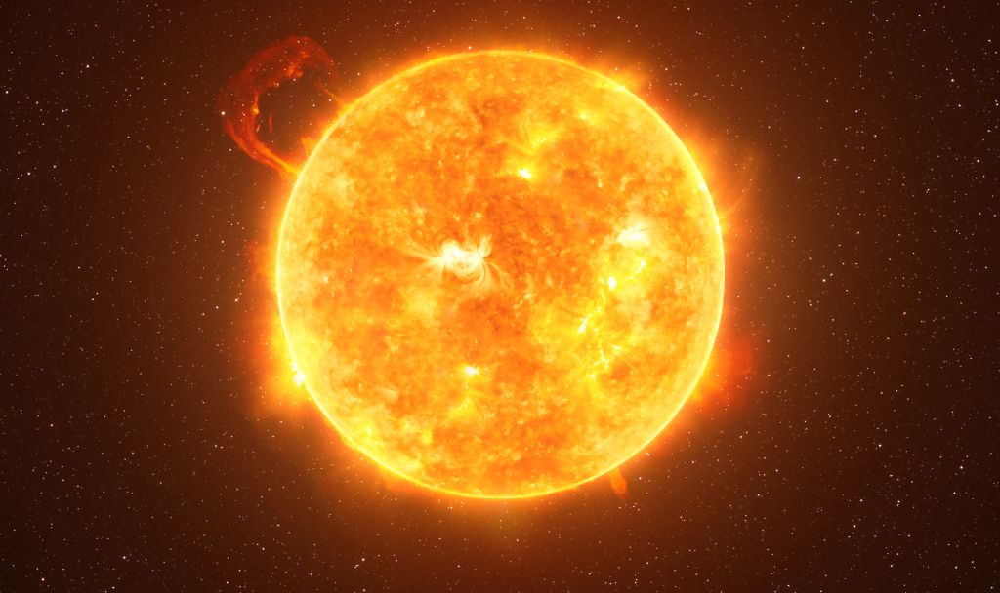
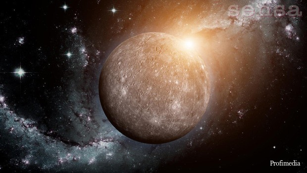
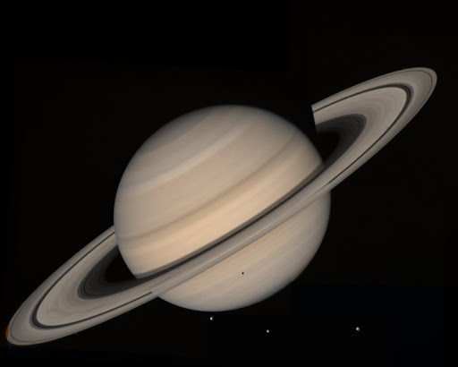
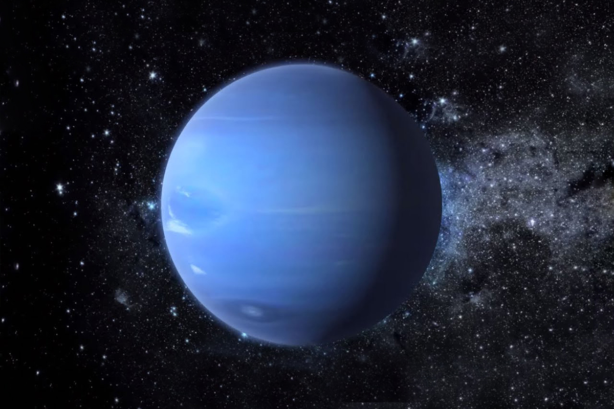

PLANETI SUNČEVOG SUSTAVA
Zemlja:
Zemlja je treći planet po redoslijedu udaljenosti od Sunca, najgušći planet u Sunčevu sustavu i najveći među unutarnjim planetima. Prosječno je od Sunca udaljen 149,6 milijuna kilometara, što se uzima kao astronomska jedinica (AJ).
Zemlja ima svojstvenu topografiju (71% kore prekriveno je vodom), ima atmosferu s dušikom i kisikom, te biosferu. Jedini je poznati planet koji ima oceane, atmosferu s mnogo kisika i živu geološku aktivnost. Do te raznolikosti, koju nema nijedan poznati drugi planet, došlo je u toku razvoja.
Zemlja u jednoj godini prijeđe 940 milijuna kilometara.[20] Vrti se oko svoje osi prosječnom brzinom od 29,78 km/s.[21] Od siječnja do lipnja Zemlja prijeđe 470 000 000 kilometara. U jednom mjesecu prijeđe 78 000 000 kilometara. Zemlja kruži oko Sunca, a Sunce kruži oko središta Mliječnog puta. Zemlja obiđe Sunce za vrijeme sideričke (zvjezdane) godine, koja je jednaka 365,256 36 d = 365 d 6 h 9 min 9,5 s, pri čem je dan jednak 86 400 s.
Mars:
Mars (lat.), četvrti planet po udaljenosti od Sunca, vidljiv sa Zemlje prostim okom i zato poznat od davnine. Promjer mu je 6792 km, masa 0,107 Zemljine mase, srednja gustoća 3933 kg/m³, a površinsko gravitacijsko ubrzanje 0,377 gravitacijskoga ubrzanja na Zemlji. Ima dva pratioca nepravilna oblika, Deimos i Phobos.
Sunčev mu dan traje gotovo kao i Zemljin, 24 h i 40 min. Oko Sunca obiđe za 687 zemaljskih dana, od Sunca je prosječno udaljen 228 mil. km. Pogled sa Zemlje otkriva na Marsu bijele polarne kape, crvenkastonarančastu površinu s tamnijim i svjetlijim dijelovima te vrlo rijetku atmosferu, koja se sastoji od 95% ugljikova dioksida, 2,7% dušika, 1,6% argona te primjesa. Površinski tlak iznosi oko 700 Pa. Temperatura može biti od –140 °C do nešto više od 0 °C, ovisno o dobu dana i godine te o položaju Marsa na stazi.

Marsovo tlo sastoji se od kremena i limonita i slično je Zemljinu tlu, osim velike prisutnosti željeza na njegovoj površini (oko 13,5%) u obliku oksida, što tlu daje crvenkastonarančastu boju. Mars ima ionosferu te vrlo slabo magnetsko polje. Tokovi nekadašnjih rijeka vode od južne na sjevernu polutku. Snimkama na površini ustanovljeno je postojanje sedimenata nastalih taloženjem u vodi.
Venera:

Venera, drugi planet po udaljenosti od Sunca, bez satelita, nešto manji od Zemlje (promjer 12 104 km). Na nebu je najsjajniji planet i pokazuje faze. Od Sunca se najviše udalji 47° pa se vidi ili uvečer kao Večernja zvijezda ili ujutro kao Danica. Os vrtnje gotovo je okomita na ravninu staze.
Okreće se retrogradno (smjer dnevnoga prividnog gibanja Sunca suprotan je onomu na Zemlji) i najsporije od svih planeta; siderički period vrtnje traje 243,0 d i dulji je od godine, koja traje 224,7 d, dok Sunčev dan na Veneri traje 116,7 d, što je sumjerljivo s njezinom sinodičkom godinom od 583,9 d.

Venerina atmosfera 50 je puta gušća od Zemljine, sadrži 96,5% ugljikova dioksida i 3,5% dušika; manjinski su sastojci ugljikov monoksid (50 ppm), argon (70 ppm), voda (50 ppm), sumporov dioksid (60 ppm), kisik (do 20 ppm), klorovodik (0,5 ppm), fluorovodik (5 · 10-3 ppm). Tlak pri tlu iznosi 90 · 105 Pa, a temperatura 733 K (460 °C), što je posljedica efekta staklenika.
Venerin reljef sastoji se pretežno od blagih nizina, iz kojih se do visine od 3 do 4 km uzdižu visoravni kontinentskih razmjera i mnogi vulkani, zasigurno ugasli. Velik je broj vulkana plitkih kratera.
Jupiter:

Jupiter, planet s najvećim promjerom i najvećom masom u Sunčevu sustavu, peti po udaljenosti od Sunca (prosječna udaljenost 778 milijuna kilometara). Po izduljenoj kružnoj putanji (ekscentricitet 0,0489) obiđe Sunce za 11,862 god. Okrene se oko svoje osi za 9,926 sati. Blagog je sjaja (albedo 0,538).
Tijelo mu je splošteno (ekvatorski promjer 142 984 km, polarni promjer 133 708 km). Masa mu je 318,4 puta veća od Zemljine, a gustoća mu je samo oko 1/4 gustoće Zemlje. Velik dio volumena tvori vodik, koji zbog velike mase i gravitacije Jupiter nije izgubio od postanka Sunčeva sustava (4,6 mlrd. god.), kao što se zbilo s drugim planetima. Atmosfera, koja se zbog njezine gustoće sa Zemlje jedino i vidi, raslojena je u pojase i zone.

Jupiter ima oko 10 puta veće magnetsko polje od Zemlje. U njegovoj su atmosferi zamjetljive meteorološke i magnetske pojave slične onima na Zemlji, ali mnogo veće raširenosti i trajanja (npr. oluje slične tropskim ciklonima, polarna svjetlost).
Do sada je otkriveno 79 Jupiterovih satelita, a četiri najveća otkrio je Galileo Galilei (do 1610). Dva najveća, Ganimed i Kalista, veći su od planeta Merkura. Potom slijede Ija i Europa, približno veličine Mjeseca. Ostali sateliti su manji... i dr.
| Ostali planeti sunčevog sustava i zvijezda: | ||||
|---|---|---|---|---|
| Sunce  |
Merkur  |
Saturn  |
Uran |
Neptun  |